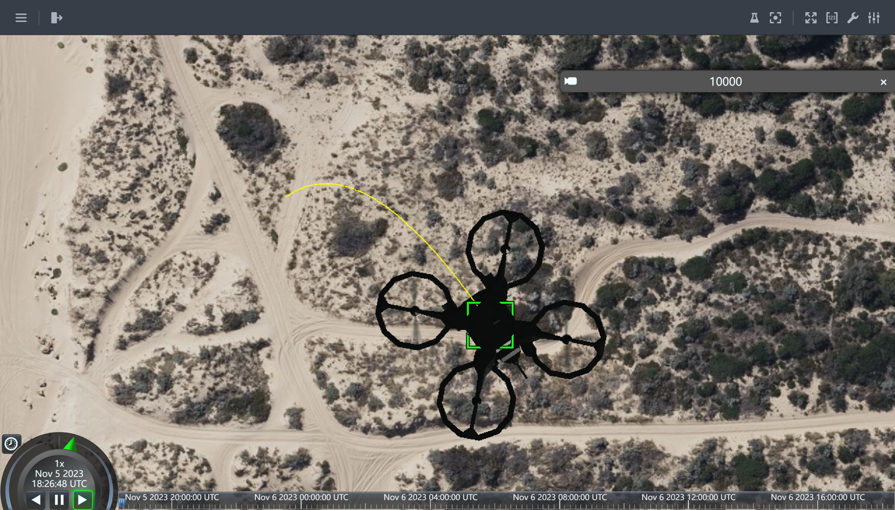

PID Course (Teaching Assistant)
Overview
This course is designed to give students an intuitive understanding of PID controllers by conducting experiments on a simulation platform. We have designed a simple PID controller in the simulation platform, and through parameter tuning of this controller, students can gain an intuitive understanding of the principles of PID controllers. We have also designed a simple second-order dynamics model for quadrotors in the simulation platform. By controlling the quadrotor to follow a set path, students can verify the control effect of the controller.
Course Content
- PID Controller Principles: Students can learn how a PID controller works through the implementation of the
PidControlclass. The comments and structured design in the code help students understand how the proportional, integral, and derivative components are calculated independently and combined to form a control signal. - Trajectory Tracking: The
desired_tracefunction provides a target trajectory, showing students how to set target positions based on the change in time. - Dynamic System Simulation: The
SecondOrderDynamicsclass demonstrates a simplified dynamic system model, helping students understand the relationship between state updates and control inputs. - Real-time Simulation: The main loop simulates the operation of a real-time control system, where students can observe how the controller responds to errors and updates control inputs at each time step.
- Data Visualization: Through plotting, students can visually comprehend the controller's performance, such as the comparison between the actual and target trajectories, and the error over time.

Student Activities
- Understanding the Code: Initially, students need to read and comprehend each part of the code, including how the PID controller operates, system dynamics, target trajectory setting, and the simulation loop.
- Modifying Parameters: Students can alter the
kp,ki,kdparameters in thePidControlto see changes in the controller's performance. - Experimenting and Observing: Students can run the code and observe the quadrotor's flight path and behavior under different PID parameters.
- Adjusting the Target Trajectory: Students can modify the
desired_tracefunction to try different target trajectories. - Problem-Solving: If issues arise during the simulation, students are expected to analyze the cause of the problem and attempt to solve it.
Results
The students conducted the simulation and saw the motion of the quadrotor. They got a better understanding of the PID controller and the quadrotor's dynamics. They also learned how to tune the PID parameters to improve the controller's performance. The students were able to complete the course and achieve the expected learning outcomes.